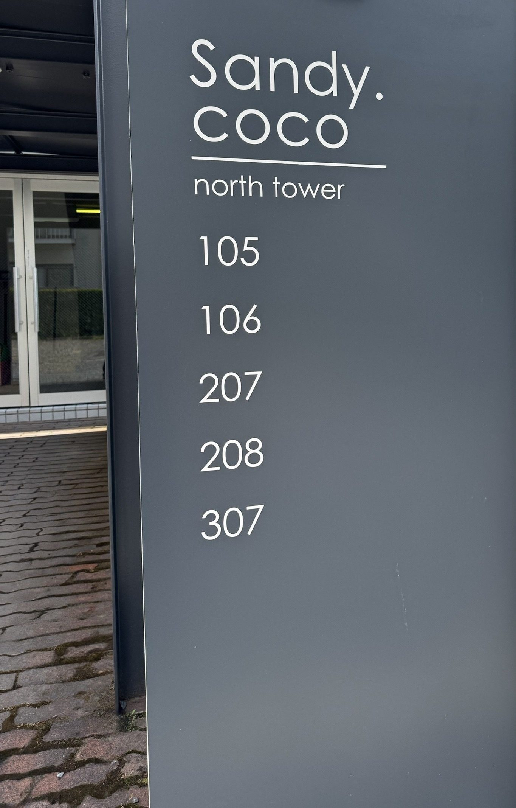

室内写真・間取り図は管理会社へ
NOW OPEN
north tower307
最上階の南向き角部屋。12帖のLDKに3つの個室、季節物をしまえるトランクルーム付き。
賃料65,000円
共益費3,000円
- 敷金 / 礼金
- 2ヶ月（130,000円）/ なし
- 駐車場
- 敷地内 5,000円（税別）/ 台・空きあり
- 間取り
- 3LDK（LDK 12帖・洋室 6帖・和室 6畳×2）
- 専有面積
- 68.73㎡
- 所在階 / 向き
- 3階（最上階）/ 南・角部屋
- 入居可能日
- 2026年11月中旬
- 契約期間
- 2年
- 保証会社
- オリコ（加入要）
EQUIPMENT
- エアコン
- バス・トイレ別
- 温水洗浄便座
- 独立洗面台（シャワー付）
- トランクルーム
- クローゼット
- シューズボックス
- 室内洗濯機置場
- 南面バルコニー
- 駐輪場
- プロパンガス・公営水道
鉄骨造3階建・全17戸。ペット・楽器不可。鍵交換・室内清掃・火災保険などの初期費用は管理会社にご確認ください。